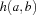
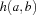
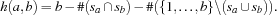

3 Generating Hamming Codes
Problem Specification
Generate a Hamming code that fits in  -bit words to code
-bit words to code  symbols where the Hamming distance between every two symbol codes is at least
symbols where the Hamming distance between every two symbol codes is at least  . The Hamming distance between to words is the number of bit positions where they differ.
. The Hamming distance between to words is the number of bit positions where they differ.
Model
A -bit word is modeled by a set  where
where  means that the bit at position is set (resp. unset otherwise). The Hamming distance  between two words
means that the bit at position is set (resp. unset otherwise). The Hamming distance  between two words  and represented as sets
and represented as sets  and
and  can be computed by subtracting from the word size the number of elements that is contained (
can be computed by subtracting from the word size the number of elements that is contained ( ) resp. is not contained (
) resp. is not contained ( ) in both sets. Thus, the Hamming distance results in
) in both sets. Thus, the Hamming distance results in

Solver
The function Hamming returns a solver to generate a Hamming code for NumSymbols symbols in words with Bits bits and a Hamming distance of Distance. The procedure MinDist implements the constraint that the Hamming distance does not exceed the value of Distance. The list Xs holds the sets representing the single codes. The nested loop (ForAllTail and ForAll) imposes MinDist on all pairwise distinct elements of Xs. The distribution employs straightforwardly a naive strategy.
declare
fun {Hamming Bits Distance NumSymbols}
proc {MinDist X Y}
Common1s = {FS.intersect X Y}
Common0s = {FS.complIn
{FS.union X Y}
{FS.value.make [1#Bits]}}
in
Bits-{FS.card Common1s}-{FS.card Common0s}>=:Distance
end
in
proc {$ Xs}
Xs = {FS.var.list.upperBound NumSymbols [1#Bits]}
{ForAllTail Xs proc {$ X|Y}
{ForAll Y proc {$ Z}
{MinDist X Z}
end}
end}
{FS.distribute naive Xs}
end
end
The following code generates a Hamming code for 16 symbols using 7 bit words and ensures a Hamming distance of 2.
{Browse
{Map {SearchOne {Hamming 7 2 16}}.1
fun {$ X}
{ForThread 7 1 ~1 fun {$ Is I}
{FS.reified.isIn I X}|Is
end nil}
end}}Further, the code is nicely formatted displayed in the Oz Browser.